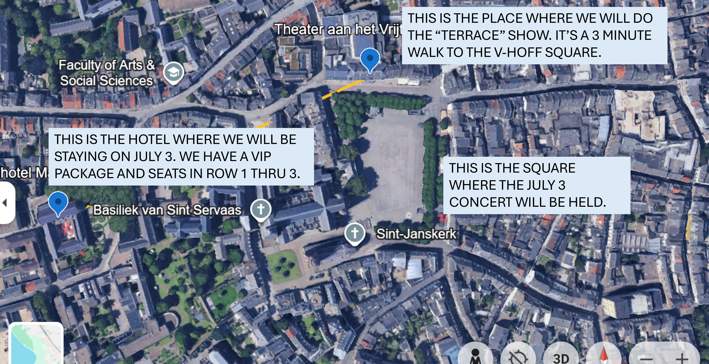

THIS IS TERRACE_PROGRAM.HTML
- THE ADDRESS OF THE TERRACE PROGRAM IS Vrijthof 47, 6211 LE Maastricht, Netherlands
- THIS IS A MAP OF THE VRIJTHOF SQUARE
- THE ADDRESS OF THE TERRACE EVENT IS "Theater aan het Vrijthof/Vrijthof 47, 6211 LE Maastricht"
- THE ADDRESS OS THE HOTEL AT THE VIP EVENT IS "KRUISHERENHOTEL MAASTRICHT"
- THE WALKING MAP IS "X"
- HERE IS A LINK TO THE HOTEL HERE
